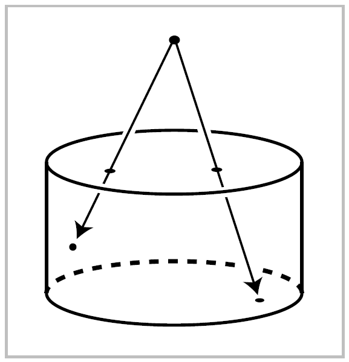
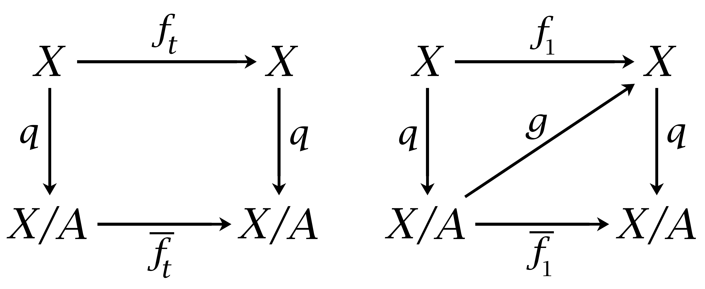
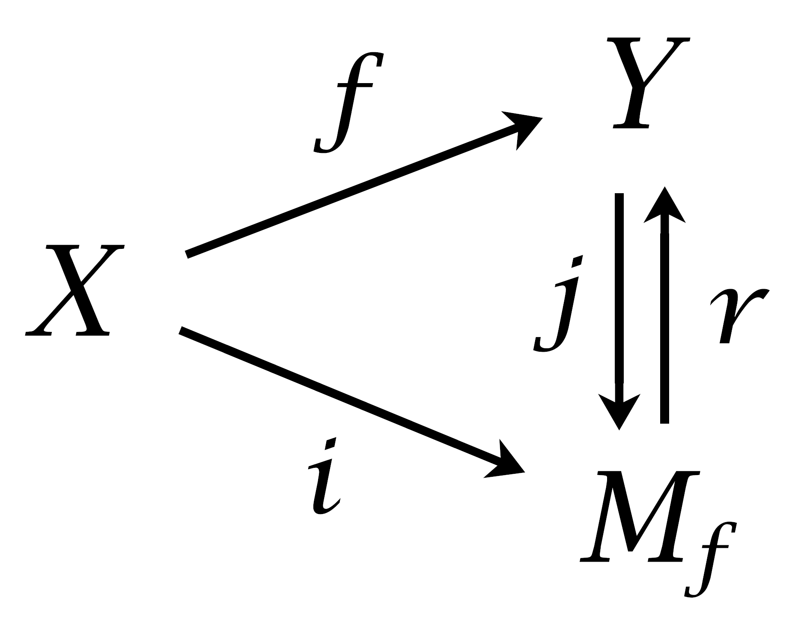
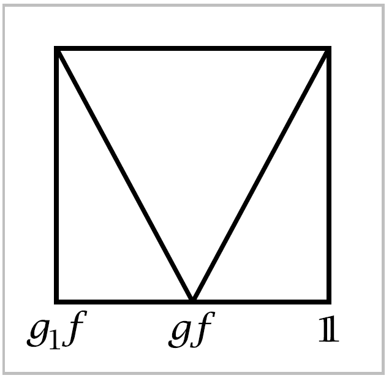

The Homotopy Extension Property#
In this final section of the chapter we will actually prove a few things, including the two criteria for homotopy equivalence described above. The proofs depend upon a technical property that arises in many other contexts as well. Consider the following problem. Suppose one is given a map \(f_0:X \rightarrow Y\), and on a subspace \(A \subset X\) one is also given a homotopy \(f_t:A \rightarrow Y\) of \(f_0 \mid A\) that one would like to extend to a homotopy \(f_t:X \rightarrow Y\) of the given \(f_0\). If the pair \((X,A)\) has the homotopy extension property. Thus \((X,A)\) has the homotopy extension property if every pair of maps \(X \times \{0\} \rightarrow Y\) and \(A \times I \rightarrow Y\) that agree on \(A \times \{0\}\) can be extended to a map \(X \times I \rightarrow Y\).
A pair \((X,A)\) has the homotopy extension property if and only if \(X \times \{0\} \cup A \times I\) is a retract of \(X \times I\).
For one implication, the homotopy extension property for \((X,A)\) implies that the identity map \(X \times \{0\} \cup A \times I \rightarrow X \times \{0\} \cup A \times I\) extends to a map :math:` X times I rightarrow X times {0} cup A times I`, so \(X \times \{0\} \cup A \times I\) is a retract of \(X \times I\). The converse is equally easy when \(A\) is closed in \(X\). Then any two maps \(X \times \{0\} \rightarrow Y\) and \(A \times I \rightarrow Y\) that agree on \(A \times \{0\}\) combine to give a map \(X \times \{0\} \cup A\times I \rightarrow Y\) which is continuous since it is continuous on the closed sets \(X \times \{0\}\) and \(A \times I\). By composing this map \(X \times \{0\} \cup A \times I \rightarrow Y\) with a retraction \(X \times I \rightarrow X \times \{0\} \cup A \rightarrow I\) we get an extension \(X \times I \rightarrow Y\), so \((X,A)\) has the homotopy extension property. The hypothesis that \(A\) is closed can be avoided by a mor complicated argument given in the Appendix. If \(X \times \{0\} \cup A \times I\) is a retract of \(X \times I\) and \(X\) is Hausdorff, then \(A\) must in fact be closed in \(X\). For if \(r:X \times I \rightarrow X \times I\) is a retraction onto \(X\times \{0\} \cup A \times I\), then the iamge of \(r\) is the set of points \(z \in X \times I\) with \(r(z)=z\), a closed set if \(X\) is Hausdorff, so \(X \times \{0\} \cup A\times I\) is closed in \(X \times I\) and hence \(A\) is closed in \(X\).
A simple example of a pair \((X,A)\) with \(A\) closed for which the homotopy extension property fails is the pair \((I,A)\) where \(A = \{0, 1, \dfrac{1}{2}, \dfrac{1}{3}, \dfrac{1}{4},\cdots \}\). It is not hard to show that there is no continuous retraction \(I\times I \rightarrow I \times \{0\} \cup A \times I\). The breakdown of homotopy extension here can be attributed to the bad structure of \((X,A)\) near \(0\). With nicer local structure the homotopy extension property does hold, as the next example shows.
{kind=link}
Example 0.15. A pair \((X,A)\) has the homotopy extension property if \(A\) has a mapping cylinder neighborhood in \(X\), by which we mean a closed neighborhood \(N\) containing a subspace \(B\), thought of as the boundary of \(N\), with \(N-B\) an open neighborhood of \(A\), such that there exists a map \(f:B \rightarrow A\) and a homeomorphism \(h:M-f \rightarrow N\) with \(h \mid A \cup B = \mathbb{1}\). Mapping cylinder neighborhoods like this occur fairly often. For example, the thick letters discussed at the beginning of the chapter provide such neighborhoods of the thin letters, regarded as subspaces of the plane. To verify the homotopy extension property, notice first that \(I \times I\) retracts onto \(I \times \{0\} \cup \partial I \times I\), hence \(B \times I \times I\) retracts onto \(B \times I \times \{0\} \cup B \times \partial I \times I\), and this retraction induces a retraction of \(M_f \times I\) onto \(M_f \times \{0\} \cup (A \cup B) \times I\). Thus \((M_f, A \cup B)\) has the homotopy extension property. Hence so does the homeomorphic pair \((N, A \cup B)\). Now given a map \(X \rightarrow Y\) and a homotopy of its restriction to \(A\), we can take the constant homotopy on \(X - (N-B)\) and then extend over \(N\) by applying the homotopy extension property for \((N, A\cup B)\) to the given homotopy on \(A\) and the constant homotopy on \(B\).
Proposition 0.16. If \((X,A)\) is a CW pair, then \(X \times \{0\}\cup A \times I\) is a deformation retract of \(X \times I\), hence \((X,A)\) has the homotopy extension property.
{kind=link}
Proof: There is a retraction \(r:D^n \times I \rightarrow D^n \times \{0\} \cup \partial D^n \times I\), for example the radial projection from the point point \((0,2) \in D^n \times \mathbb{R}\). Then setting setting \(r_t = tr + (1-t)\mathbb{1}\) gives a deformation retraction of \(D^n \times I\) onto \(D^n \times \{0\} \cup \partial D^n \times I\). This deformation retraction gives rise to a deformation retraction of \(X^n \times I\) onto \(X^n \times \{0\} \cup (X^{n-1} \cup A^n) \times I\) since \(X^n \times I\) is obtained from \(X^n \times \{0\} \cup (X^{n-1} \cup A^n) \times I\) during the \(t\)-interval \([1/2^{n+1},1/2^n]\), this infinite concatenation of homotopies is a deformation retraction of \(X \times I\) onto \(X \times \{0\} \cup A \times I\). There is no problem with continuity of this deformation retraction at \(t=0\) since it is continuous on \(X^n \times I\), being stationary there during the \(t\)-interval \([0,1/2^{n+1}]\), and CW complexes have the weak topology with respect to their skeleta so a map is continuous iff its restriction to each skeleton is continuous. ◻
Now we can prove a generalizatoin of the earlier assertion that collapsing a contractible subcomplex is a homotopy equivalence.
Proposition 0.17. If the pair \((X,A)\) satisfies the homotopy extension property and \(A\) is contractible, then the quotient map \(q:X \rightarrow X/A\) is a homotopy equivalence.
{kind=link}
Proof: Let \(f_t:X \rightarrow X\) be a homotopy extending a contraction of \(A\), with \(f_0 = \mathbb{1}\). Since \(f_t(A) \subset A\) for all \(t\) , the composition \(qf_t:X \rightarrow X/A\) sends \(A\) to a point and hence factors as a composition \(X \overset{q}{\rightarrow} X/A \rightarrow X/A\). Denoting the latter map by \(\bar{f}_t:X/A \rightarrow X/A\), we have \(qf_t = \bar{f}_tq\) in the first of the two diagrams at the right. When \(t=1\) we have \(f_1(A)\) equal to a point, the point to which \(A\) contracts, so \(f_1\) induces a map \(g:X/A \rightarrow X\) with \(gq=f_1\), as in the second diagram. It follows that \(qg = \bar{f}_1\) since \(qg(\bar{x}) = qgq(x) = qf_1(x) = \bar{f}_1q(x) = \bar{f}_1(\bar{x})\). The maps \(g\) and \(q\) are inverse homotopy equivalences since \(gq = f_1 \simeq f_0 = \mathbb{1}\) via \(f_t\) and \(qg = \bar{f}_1 \simeq \bar{f}_0 = \mathbb{1}\) via \(\bar{f}_t\).
Another application of the homotopy extension property, giving a slightly more refined version of one of our earlier criteria for homotopy equivalence, is the following:
Proposition 0.18. If \((X_1, A)\) is a CW pair and we have attaching maps \(f,g:A \rightarrow X_0\) that are homotopic, then \(X_0 \sqcup_f X_1 \simeq X_0 \sqcup_g X_1\) rel \(X_0\).
Here the definition of \(W \simeq Z \text{ rel } Y\) for pairs \((W,Y)\) and \((Z,Y)\) is that there are maps \(\varphi : W \rightarrow Z\) and \(\psi : Z \rightarrow W\) restricting to the identity on \(Y\), such that \(\psi \varphi \simeq \mathbb{1}\) and \(\varphi \psi \simeq \mathbb{1}\) via homotopies that restrict to the identity on \(Y\) at all times.
Proof: If \(F:A\times I \rightarrow X_0\) is a homotopy from \(f\) to \(g\), consider the space \(X_0 \sqcup_F (X_1 \times I)\). This contains both \(X_0 \sqcup_f X_1\) and \(X_0 \sqcup_g X_1\) as subspaces. A deformation retraction of \(X_1 \times I\) onto \(X_1 \times \{0\} \cup A \times I\) as in Proposition 0.16 induces a deformation retraction of \(X_0 \sqcup_F (X_1 \times I)\) onto \(X_0 \sqcup_f X_1\). Similarly \(X_0 \sqcup_F (X_1 \times I)\) deformation retracts onto \(X_0 \sqcup_g X_1\). Both these deformation retractions restrict to the identity on \(X_0\), so together they give a homotopy equivalence \(X_0 \sqcup_f X_1 \simeq X_0 \sqcup_g X_1\) rel \(X_0\). ◻
We finish this chapter with a technical result whose proof will involve several applications of the homotopy extension property:
Proposition 0.19. Suppose \((X,A)\) and \((Y,A)\) satisfy the homotopy extension property, and \(f:X \rightarrow Y\) is a homotopy equivalence with \(f|A=\mathbb{1}\). Then \(f\) is a homotopy equivalence rel \(A\).
Corollary 0.20. If \((X,A)\) satisfies the homotopy extension property and the inclusion \(A \hookrightarrow X\) is a homotopy equivalence, then \(A\) is a deformation retract of \(X\).
Proof: Apply the proposition to the inclusion \(A \hookrightarrow X\).
Corollary 0.21. A map \(f:X \rightarrow Y\) is a homotopy equivalence iff \(X\) is a deformation retract of the mapping cylinder \(M_f\). Hence, two spaces \(X\) and \(Y\) are homotopy equivalent iff there is a third space containing both \(X\) and \(Y\) as deformation retracts.
{kind=link}
Proof: In the diagram at the right the maps \(i\) and \(j\) are the inclusions and \(r\) is the canonical retraction, so \(f=ri\) and \(i \simeq jf\). Since \(j\) and \(r\) are homotopy equivalences, it follows that \(f\) is a homotopy equivalence iff \(i\) is a homotopy equivalence, since the composition of two homotopy equivalences is a homotopy equivalence and a map homotopic to a homotopy equivalence is a homotopy equivalence. Now apply the preceding corollary to the pair \((M_f, X)\), which satisfies the homotopy extension property by Example 0.15 using the neighborhood \(X \times [0, \frac{1}{2}]\) of \(X\) in \(M_f\). ◻
Proof of 0.19 : Let \(g:\rightarrow X\) be a homotopy inverse for \(f\). There will be three steps to the proof:
(1) Construct a homotopy from \(g\) to a map \(g_1\) with \(g_1 \mid A = \mathcal{1}\).
(2) Show \(g_1f \simeq \mathbb{1} \text{ rel } A\).
(3) show \(fg_1 \simeq \mathbb{1} \text{ rel } A\).
(1) Let \(h_t: X \rightarrow X\) be a homotopy from \(gf=h_0\) to \(\mathbb{1}=h_1\). Since \(f \mid A=\mathbb{1}\), we can view \(h_t \mid A\) as a homotopy from \(g \mid A\) to \(\mathbb{1}\). Then since we assume \((Y,A)\) has the homotopy extension property, we can extend this homotopy to a homotopy \(g_t: Y \rightarrow X\) from \(g=g_0\) to a map \(g_1\) with \(g_1 \mid A = \mathbb{1}\).
(2) A hotopy from \(g_1 f\) to \(\mathbb{1}\) is given by the formulas
Note that the two definitions agree when \(t=\frac{1}{2}\). Since \(f \mid A=\mathbb{1}\) and \(g_t =h_t\) on \(A\), the homotopy \(k_t \mid A\) starts and ends with the identity, and its second half simply retraces its first half, that is, \(k_t = k_{1-t}\) on \(A\). We will define a ‘homotopy of homotopies’
{kind=link}
\(k_{tu}: A \rightarrow X\) by means of the figure at the right showing the parameter domain \(I \times I\) for the pairs \((t,u)\), with the \(t\)-axis horizontal and the \(u\)-axis vertical. On the bottom edge of the square we define \(k_{t0} = k_t \mid A\). Below the ‘V’ we define \(k_{tu}\) to be independent of \(t\). This is unambiguous since \(k_t=k_{1-t}\) on \(A\). Since \(k_0=\mathbb{1}\) on \(A\), we have \(k_{tu}=\mathbb{1}\) for \((t,u)\) in the left, right, and top edges of the square. Next we extend \(k_{tu}\) over \(X\), as follows. Since \((X,A)\) has the homotopy extension property, so does \((X \times I, A \times I)\), as one can see from the equivalent retraction property. Viewing \(k_{tu}\) as a homotopy of \(k_t \mid A\), we can therefore extend \(k_{tu} A \rightarrow X\) to \(k_{tu}: X \rightarrow X\) with \(k_{t0}=k_t\). If we restrict this \(k_{tu}\) to the left, top, and right edges of the \((t,u)\)-square, we get a homotopy \(g_1 f \simeq \mathbb{1} \text{ rel } A\).
(3) Since \(g_1 \simeq g\), we have \(fg_1 \simeq fg \simeq \mathbb{1}\), so \(fg_1 \simeq \mathbb{1}\) and steps (1) and (2) can be repeated with the pair \(f, \, g\) replaced by \(g_1, \, f\). The result is a map \(f_1: X \rightarrow Y\) with \(f_1 \mid A = \mathbb{1}\) and \(f_1g_1 \simeq \mathbb{1} \text{ rel } A\). Hence \(f_1 \simeq f_1(g_1 f) = (f_1 g_1)f \simeq f \text{ rel } A\). From this we deduce that \(fg_1 \simeq f_1g_1 \simeq \mathbb{1} \text{ rel } A\).